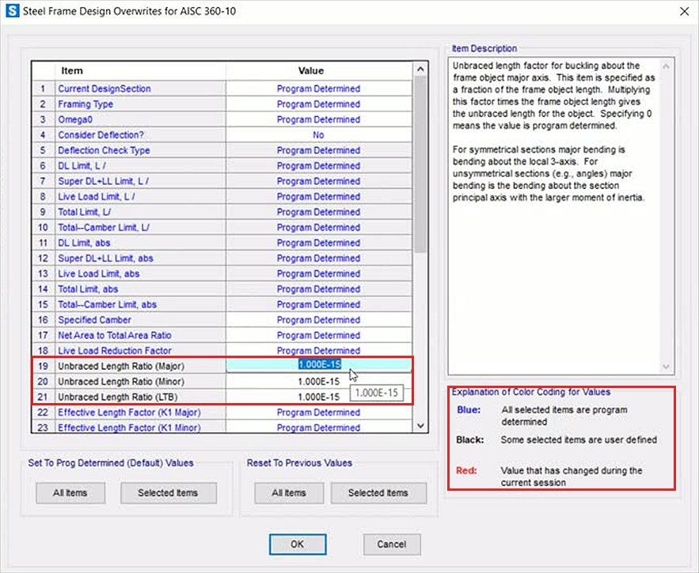

Bài 12.3. Overwrites Overwrites: unbraced length ratios
Mặc định SAP2000 lấy chiều dài không giằng bằng chiều dài phần tử. Với kèo, cột có xà gồ, dầm tường và chống xiên, phải khai báo lại bằng tỷ số so với chiều dài phần tử.
- Tính Unbraced Length Ratio (Minor, LTB) từ khoảng cách điểm giữ và chiều dài phần tử.
- Biết vì sao không được đặt tỷ số gần 0.
1. Tình huống
Ở Chương 13, cột C1 của nhà máy DNP chỉ đạt khi $L_b \le 4{,}2$ m. Thêm chống xiên trên bản vẽ chưa đủ: nếu Overwrites trong SAP2000 vẫn để LTB = 1,0, chương trình vẫn tính với cả chiều dài cột và báo không đạt.
2. Nội dung chính
Overwrites – chiều dài không giằng
SAP2000 lấy chiều dài thanh (từ nút đến nút) làm chiều dài không giằng mặc định. Với nhà xưởng, cần khai báo theo tỷ số so với chiều dài thanh:
| Tham số | Ý nghĩa | Cách lấy |
|---|---|---|
| Unbraced Length Ratio (Major) | $L_x/L$ – uốn quanh trục mạnh | 1,0 (DAM, $K = 1$) |
| Unbraced Length Ratio (Minor) | $L_y/L$ – mất ổn định quanh trục yếu | Khoảng cách điểm giữ ngoài mặt phẳng ÷ chiều dài thanh |
| Unbraced Length Ratio (LTB) | $L_b/L$ – mất ổn định xoắn ngang | Khoảng cách chống xiên cánh nén ÷ chiều dài thanh |
| Effective Length Factor K1, K2 | Hệ số $K$ | DAM: để mặc định (1,0) |
| $C_b$ | Hệ số mô men không đều | Để SAP tính, hoặc nhập 1,0 (an toàn) |
Bảng 12.2. Overwrites chính
Ví dụ: kèo dài 13,1 m, chống xiên cánh dưới cách 3 m (mỗi 2 xà gồ) → LTB = 3/13,1 = 0,23; Minor = 0,23 (cánh trên giữ bởi xà gồ mỗi 1,5 m, cánh dưới bởi chống xiên). Cột cao 9 m, dầm tường có chống xiên mỗi 3 m → Minor = LTB = 0,33.
Mô hình giảng viên (NM DNP-21.04) khai báo XLMinor, XLLTB khác nhau cho từng thanh (0,25; 0,27; 0,30; 0,32; 0,33; 0,34; 0,50; 0,70; 0,75…). Đây là cách làm đúng.
Không đặt Unbraced Length Ratio gần 0 (ví dụ 1,0E-04, xuất hiện trong video Buổi 13) trừ khi cánh nén thực sự được giữ liên tục, như có sàn BTCT liên kết liên tục với cánh. Giá trị này khiến SAP bỏ qua mất ổn định xoắn ngang và mất ổn định quanh trục yếu, nên tỷ số kiểm tra nhỏ hơn thực tế. Cánh dưới kèo khi gió hút không được giữ liên tục.
3. Thực hành SAP2000
- Select
- chọn phần tử
- Design
- Steel Frame Design
- View/Revise Overwrites
- Unbraced Length Ratio

4. Lỗi thường gặp
- Tính tỷ số theo chiều dài cả cột trong khi phần tử SAP chỉ là một đoạn cột (nút giằng chia cột thành nhiều phần tử).
- Nhập $K \gt 1$ trong Overwrites khi đã dùng Direct Analysis.
5. Luyện tập
Khi dùng Direct Analysis, Effective Length Factor K1, K2 trong Overwrites nên để:
Gợi ý
DAM cho phép $K = 1$.
Lời giải
DAM: để mặc định 1,0; nhập $K \gt 1$ là kể ổn định hai lần.
Một phần tử kèo dài 13,5 m, chống xiên cánh dưới cách nhau 3 m. Tính Unbraced Length Ratio (LTB).
Gợi ý
Tỷ số = khoảng cách chống xiên / chiều dài phần tử.
Lời giải
$3/13{,}5 = 0{,}222$.
Cột cao 9 m được chia thành hai phần tử tại nút giằng cao độ 6 m. Dầm tường có chống xiên mỗi 3 m. Tính Unbraced Length Ratio (LTB) của phần tử dưới.
Gợi ý
Tỷ số tính theo chiều dài phần tử, không theo cả cột.
Lời giải
Phần tử dưới dài 6 m → LTB $= 3/6 = 0{,}5$ (nếu lấy theo cả cột $3/9 = 0{,}33$ là sai).
- Major = 1,0 (DAM); Minor, LTB = khoảng cách điểm giữ ÷ chiều dài phần tử; K1, K2 mặc định; $C_b$ để SAP tính hoặc 1,0 (Bảng 12.2).
- Kèo 13,1 m chống xiên 3 m → 0,23; cột 9 m chống xiên 3 m → 0,33.
- Không đặt tỷ số gần 0 khi cánh nén không được giữ liên tục.